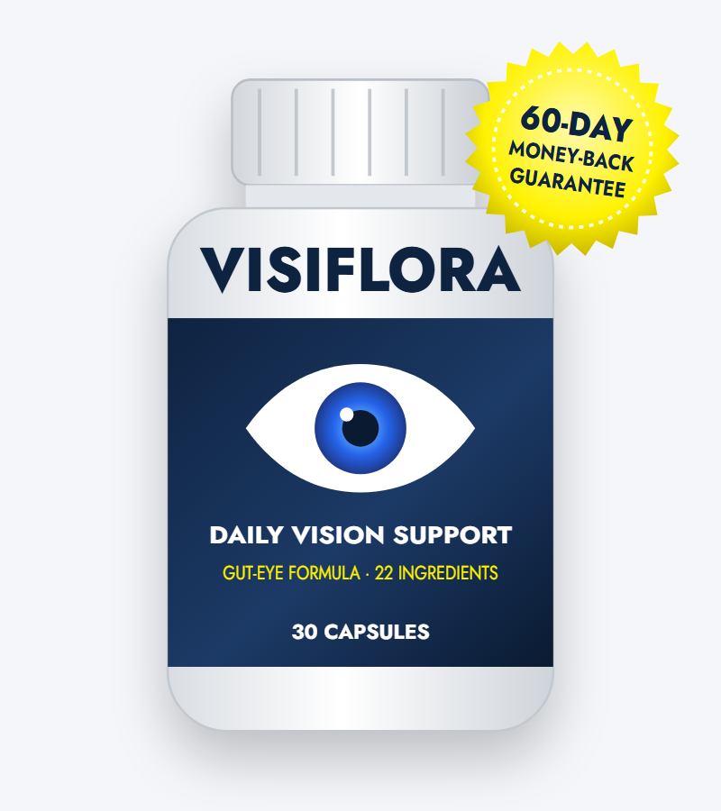
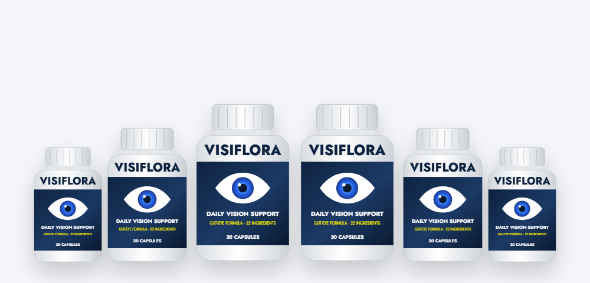

Macular Pigment Support
Lutein and zeaxanthin collect in the macula, where they help filter blue light. Saffron, bilberry and astaxanthin add antioxidant support for the retina.*
An honest VisiFlora review — the real label, what the research says, directions, and where to buy safely

VisiFlora (sometimes searched as Visi Flora or Visoflora) is a once-daily capsule marketed for clearer, more comfortable vision through a "gut-eye connection." In this VisiFlora review we walk through the actual supplement facts label, explain what each ingredient is known for, compare the doses with eye research, and cover directions, side effects, the current price and discount packages, and how to order from the VisiFlora official website.
The VisiFlora supplement is a daily eye-health formula sold online by a company that lists PhytoThrive Labs of Aurora, Colorado as its distributor. Each bottle contains 30 vegetable capsules, and you take one a day, so a bottle lasts a month.
What sets VisiFlora apart in its marketing is the "gut-eye connection." The sales page says bacterial toxins called LPS (lipopolysaccharides) can travel from an unhealthy gut and contribute to eye damage, and that VisiFlora's "Gut-Eye Barrier Complex" helps defend against them. Research on the gut-eye axis is real and growing, though still early.
In practice, VisiFlora looks like a broad eye multivitamin. It combines seven vitamins and minerals at disclosed doses with a 351 mg proprietary blend of 14 plant compounds and nutrients — familiar eye ingredients like lutein, zeaxanthin, bilberry and saffron alongside grape seed, rutin, quercetin and ginkgo.
It's important to set expectations. VisiFlora is a supplement, not a treatment for macular degeneration, glaucoma, cataracts or any eye disease, and it can't replace regular eye exams.
The VisiFlora formula is built around three groups of ingredients.*
Lutein and zeaxanthin collect in the macula, where they help filter blue light. Saffron, bilberry and astaxanthin add antioxidant support for the retina.*
Vitamins A, C and E, zinc, selenium, copper and alpha lipoic acid help protect eye tissue from oxidative stress, which builds with age and screen time.*
Grape seed, rutin, quercetin and taurine are included for the gut-eye theory, while ginkgo and coleus forskohlii are added for blood flow to the eyes.*
Note that VisiFlora contains no probiotics. The "gut" part of the formula relies on plant flavonoids and taurine rather than live bacteria, so the gut-eye angle is mostly marketing built on early research.
Because the 351 mg blend is shared by 14 ingredients, each one is present at a modest amount. The effect is likely to be gentle and gradual rather than dramatic.
Here is what the VisiFlora supplement facts label lists per one-capsule serving.
| Ingredient | Amount | % Daily Value |
|---|---|---|
| Vitamin A (as beta carotene) | 450 mcg RAE | 50% |
| Vitamin C (as ascorbic acid) | 90 mg | 100% |
| Vitamin E (as dl-alpha tocopheryl acetate) | 15 mg | 100% |
| Zinc (as zinc oxide) | 11 mg | 100% |
| Selenium (as selenium AAC) | 20 mcg | 36% |
| Copper (as copper gluconate) | 0.9 mg | 100% |
| Chromium (as chromium picolinate) | 15 mcg | 43% |
| Proprietary blend: taurine, ginkgo leaf, eyebright, grape seed extract, coleus forskohlii root, alpha lipoic acid, rutin, quercetin, bilberry fruit extract, saffron stigma extract, lycopene, lutein (marigold), zeaxanthin, astaxanthin | 351 mg total | Not established |
Other ingredients: hypromellose (vegetable capsule), rice flour, magnesium stearate, silicon dioxide. Ingredients in a proprietary blend are listed in descending order by weight.
The best-studied eye nutrients. In the large AREDS2 trial, 10 mg lutein and 2 mg zeaxanthin daily helped slow advanced macular degeneration. In VisiFlora they sit near the end of the blend, so the amounts are likely small.*
Small trials using about 20–30 mg of saffron a day found modest improvements in visual function in early macular degeneration.*
Bilberry's night-vision reputation comes from WWII folklore, and modern trials are mixed. Astaxanthin has small studies on eye fatigue from screen use.*
Provided at about 100% of the Daily Value — useful as a baseline, but well below AREDS2 doses (500 mg C, 180 mg E, 80 mg zinc).*
Ginkgo has been studied for blood flow in glaucoma with mixed results. Coleus forskohlii is mostly studied as eye drops, not capsules.*
Antioxidant flavonoids with lab research on blood-vessel and barrier health. Human evidence for eye benefits is limited.*
How the VisiFlora formula compares with the doses used in eye research.
| Ingredient | In VisiFlora | Studied dose | Evidence |
|---|---|---|---|
| Lutein + zeaxanthin | Undisclosed (in 351 mg blend) | 10 mg + 2 mg | Strong (AREDS2) |
| Zinc | 11 mg | 25–80 mg | Strong for AMD at high dose |
| Vitamin C | 90 mg | 500 mg | Part of AREDS formula |
| Vitamin E | 15 mg | 180 mg (400 IU) | Part of AREDS formula |
| Saffron | Undisclosed | 20–30 mg | Small trials |
| Astaxanthin | Undisclosed | 6–12 mg | Small trials on eye fatigue |
| Bilberry | Undisclosed | 160–480 mg | Mixed |
Fourteen ingredients share 351 mg, and taurine and ginkgo are listed first, meaning they make up the largest share. Lutein, zeaxanthin and astaxanthin are listed last. Even if the blend were split evenly, each ingredient would get about 25 mg — and the last ones probably get much less. That's below the amounts used in most of the studies the sales page relies on.
The sales page says astaxanthin is "6,000 times stronger than vitamin C," that ginkgo and coleus improve blood flow to the retina "by 23%," and that bilberry was used by WWII pilots. These statements come from lab comparisons, single studies or folklore and don't describe what one VisiFlora capsule will do. The customer stories about floaters "almost gone" are not typical results; floaters usually need an eye exam, not a supplement.
Scientists are studying links between gut bacteria and eye conditions such as macular degeneration and dry eye. It's a promising field, but it hasn't produced proven supplement protocols yet — and VisiFlora contains no probiotics or fiber that directly change gut bacteria.
Our take: VisiFlora is a reasonable once-a-day eye multivitamin with a wide ingredient list. For people with diagnosed intermediate macular degeneration, an AREDS2 formula recommended by an eye doctor has far stronger evidence.
The idea at the heart of the VisiFlora marketing — that the gut influences the eyes — comes from a real and fast-growing field of research often called the "gut-retina axis." Here's what scientists actually know so far, in plain language.
Studies have found that people with age-related macular degeneration, glaucoma, diabetic retinopathy and dry eye tend to have different mixes of gut bacteria than people without those conditions. In animal experiments, changing the gut bacteria or the diet changed signs of inflammation in the retina. That suggests the gut may play some role in eye health.
Lipopolysaccharides (LPS) are parts of the outer wall of certain bacteria. When the gut lining is irritated, small amounts of LPS can enter the bloodstream and trigger low-grade inflammation throughout the body. Inflammation is one of several processes involved in age-related eye disease, which is why the theory is plausible.
Most of this research shows associations, not cause and effect, and much of it is in animals. Nobody has yet shown that a particular supplement lowers LPS and, as a result, protects vision in people. So far, the strongest proven ways to support a healthy gut are diet-based: plenty of fiber, vegetables, legumes, whole grains and fermented foods, and limiting ultra-processed foods and alcohol.
The plant flavonoids in the "Gut-Eye Barrier Complex" — grape seed, rutin and quercetin — are antioxidants with lab research on blood vessels and barrier tissues, which fits the theory. But without probiotics or prebiotic fiber, the product doesn't directly change your gut bacteria. If the gut-eye idea appeals to you, pairing any eye supplement with a high-fiber, plant-rich diet is the approach most consistent with current evidence.
Based on its ingredients, these are the benefits VisiFlora is designed to support.*
Lutein, zeaxanthin and saffron support the light-filtering pigments of the macula.*
Astaxanthin and bilberry are studied for tired eyes after long screen sessions.*
Vitamin A (beta carotene) and zinc are needed for normal vision in dim light.*
Vitamins C and E, selenium, alpha lipoic acid and grape seed help defend eye tissue against oxidative stress.*
Ginkgo and coleus forskohlii are included for healthy blood flow to the eyes.*
One vegan, stimulant-free capsule a day with food.*
The VisiFlora directions are simple. Based on the label and the vendor's FAQ:
With a 60-day guarantee, decide by about week seven whether VisiFlora is making a difference you can actually notice.
Most people tolerate eye vitamins well. A few VisiFlora ingredients do deserve attention:
Sudden floaters, flashes of light, a curtain over your vision, eye pain or sudden blurry vision are emergencies. See an eye doctor right away — don't wait for a supplement to work.
The label says VisiFlora is not for anyone under 18 or for pregnant or nursing women, and advises talking to a physician if you take medication or have a medical condition.
We looked at the VisiFlora label, the evidence, the price and the guarantee. Here's our honest VisiFlora review.
VisiFlora is a convenient, broad eye multivitamin with sensible ingredients, but the proprietary blend means you can't tell how much lutein, zeaxanthin or saffron you're getting, and the gut-eye story goes beyond the evidence. It may suit healthy adults who want general eye support in one capsule. If you have macular degeneration, ask your eye doctor about an AREDS2 formula instead. If you decide to try VisiFlora, order from the official website so you're covered by the 60-day guarantee.
Visit the VisiFlora Official WebsiteOverall, VisiFlora appears to be a real product sold by a real company through an established retailer, so it isn't a scam in the sense of taking money and shipping nothing. The gap is between the marketing and what a modest once-daily eye vitamin can do. Treat it as general eye support, keep your regular eye exams, and use the guarantee if it doesn't help.
| Option | What you get | Typical cost | Main downside |
|---|---|---|---|
| VisiFlora | 22 ingredients, 1 capsule, blend doses hidden | $49–$79 per month | Key carotenoid doses unknown |
| AREDS2 formula | 10 mg lutein, 2 mg zeaxanthin, high-dose C, E, zinc, copper | $15–$30 per month | Proven mainly for intermediate AMD; two softgels a day |
| Lutein + zeaxanthin only | Macular pigments at study doses | $10–$20 per month | Narrower formula |
| Diet | Leafy greens, eggs, fish, colorful produce | Groceries | Takes consistency |
No supplement works alone — VisiFlora included. These habits have strong support for long-term eye health:
Spinach, kale, corn, eggs and orange peppers are rich in lutein and zeaxanthin.
Omega-3 fats from salmon, sardines and mackerel support the retina and help with dry eyes.
Every 20 minutes of screen time, look at something 20 feet away for 20 seconds to reduce eye strain.
Long-term sun exposure is linked to cataracts and macular damage.
Smoking is one of the biggest risk factors for macular degeneration and cataracts.
Both protect the tiny blood vessels of the retina.
Many eye diseases have no early symptoms, and a supplement can't detect them. Book an eye exam before relying on VisiFlora if:
An eye doctor can check your pressure, retina and lens, and tell you whether a supplement like VisiFlora — or a proven AREDS2 formula — makes sense for you.
Search for the VisiFlora official website and you'll find many look-alikes — visioflora.us, visioflora.com, en-visiflora.co, usa-visiflora.com and more. Some quote different prices or bonuses. Here's how to buy genuine VisiFlora:
For the guarantee and free e-books, order from the VisiFlora official website.
The VisiFlora price drops from a $99 list price depending on the package. Each bottle is a 30-day supply, and every package includes three free e-books.
60-Day Supply · Starter
$79/bottle
List $99 · + 3 free e-books
180-Day Supply · Ultimate
$49/bottle
List $99 · + 3 free e-books
90-Day Supply · Advanced
$59/bottle
List $99 · + 3 free e-books
Prices checked on the official order page on October 18, 2026 and may change. One-time payment — no subscription. The vendor doesn't publish coupon codes; the package price is the discount.
Every VisiFlora package — including the 2-bottle starter — comes with three digital e-books.
Eye exercises and focus techniques aimed at reducing strain.
A 7-day gut reset plan with 21 recipes.
Tips for dry, tired and light-sensitive eyes. See a doctor for discharge or sudden floaters.
To order VisiFlora with the package pricing, e-books and 60-day guarantee, use the official website:

Every VisiFlora order from the official website is covered by a 60-day money-back guarantee.
According to the vendor, if you're not completely satisfied, you return the bottles within 60 days and they refund your purchase. Contact support first for the return address and keep your tracking number.
Start the process well before day 60. The guarantee only applies to orders placed through the official website.
Try VisiFlora Risk-FreeVisiFlora is a once-daily vision support supplement. Each capsule contains vitamins A, C and E, zinc, selenium, copper and chromium plus a 351 mg proprietary blend of 14 ingredients, including lutein, zeaxanthin, saffron, bilberry, astaxanthin, ginkgo and grape seed. It is marketed around the idea of a gut-eye connection.
Several VisiFlora ingredients — lutein, zeaxanthin, saffron and astaxanthin — have human research for eye health, but the amounts inside the 351 mg blend are not disclosed and the vitamin and zinc doses are far below those used in the AREDS2 eye study. VisiFlora may offer general antioxidant support; it is not a treatment for eye disease.
The vendor sells VisiFlora on its own order page at tryvisiflora.com, with checkout handled by BuyGoods. Many look-alike sites such as visioflora.us and usa-visiflora.com also call themselves the official website, so use a trusted link and check the 60-day guarantee before you pay.
On the official order page VisiFlora costs $79 per bottle for 2 bottles ($158 plus a small shipping fee), $59 per bottle for 3 bottles ($177 with free US shipping) and $49 per bottle for 6 bottles ($294 with free US shipping). Every package includes three free e-books. Each bottle is a 30-day supply.
The discount comes from buying more bottles: the price falls from a $99 list price to $79, $59 or $49 per bottle depending on the package. The vendor does not publish separate coupon codes, so be wary of sites offering extra discount codes.
The label says to take one VisiFlora capsule daily, and the vendor recommends taking it with food. Each bottle holds 30 capsules. Do not exceed the recommended dose.
VisiFlora contains vitamin A (450 mcg RAE as beta carotene), vitamin C (90 mg), vitamin E (15 mg), zinc (11 mg), selenium (20 mcg), copper (0.9 mg) and chromium (15 mcg), plus a 351 mg blend of taurine, ginkgo, eyebright, grape seed, coleus forskohlii, alpha lipoic acid, rutin, quercetin, bilberry, saffron, lycopene, lutein, zeaxanthin and astaxanthin.
Most people tolerate it well, but ginkgo and grape seed may increase bleeding risk with blood thinners, and coleus forskohlii can lower blood pressure. People taking blood thinners, blood pressure or diabetes medicine, and anyone pregnant, nursing or under 18, should talk to a doctor first.
No. Despite the gut-eye marketing, the VisiFlora label lists no probiotic strains. The gut-focused ingredients are plant compounds such as grape seed, rutin and quercetin, plus taurine.
Yes. Visoflora and Visi Flora are common misspellings of VisiFlora. They refer to the same once-daily vision supplement.
VisiFlora has a 60-day money-back guarantee. If you are not satisfied, return the bottles within 60 days for a refund of your purchase, according to the vendor.
Choose a 2, 3 or 6-bottle package on the official order page and complete the secure BuyGoods checkout. It is a one-time payment with no subscription, and the charge appears on your statement as BuyGoods.
Get VisiFlora for as little as $49 per bottle with free US shipping on the 6-bottle package — plus three free e-books and a 60-day money-back guarantee.
Order VisiFlora Now